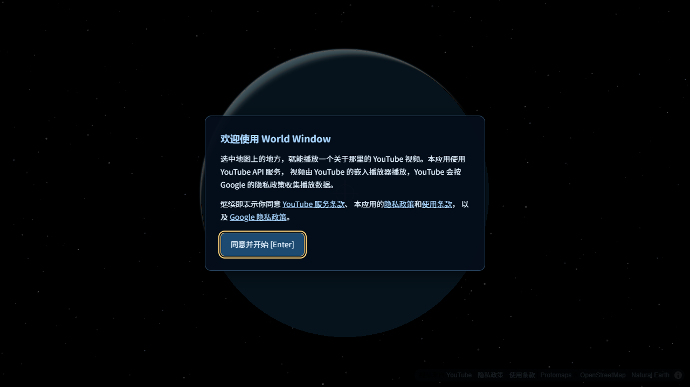

World Window
A world map on the ceiling. Pick a place, watch a video about it.
投在天花板上的世界地图：选一个地方，看一个关于那里的视频。

第一次打开时，先请你同意 YouTube 服务条款和本应用的隐私政策；之后地图右下角和设置里一直有这些链接。
What it does
- A globe or flat world map with countries, states and provinces, and cities, projected onto a ceiling at home and used with a remote control.
- For each place there is one hand-reviewed video: a city walk, a history or geography explainer, a travel vlog or major news. Videos are chosen with the YouTube Data API (search and video details) and reviewed by a person.
- Pressing Enter plays the video in the official YouTube embedded player, with YouTube's own controls and branding. Nothing is downloaded or modified.
地图有球体和平面两种，分国家、州省、城市三级，投在家里的天花板上，用遥控器操作。 每个地方配一个人工审过的视频（城市漫步、历史地理科普、旅行博主、重大新闻），用 YouTube Data API 搜索和获取视频信息，再由人审定。 按 Enter 用官方 YouTube 嵌入播放器播放，带 YouTube 自己的控制条和标识，不下载、不改动视频。
YouTube API Services
World Window uses YouTube API Services. By using it you agree to be bound by the YouTube Terms of Service. See the World Window Privacy Policy and the Google Privacy Policy. World Window has no accounts and collects no personal data.
本应用使用 YouTube API 服务，使用即表示同意受 YouTube 服务条款约束。详见本应用的隐私政策和 Google 隐私政策。 World Window 没有账号，不收集个人数据。
Who makes it
A personal, non-commercial project by one developer, for home use. Contact: 13011298925@163.com
一个人做的个人非商业项目，供家庭使用。